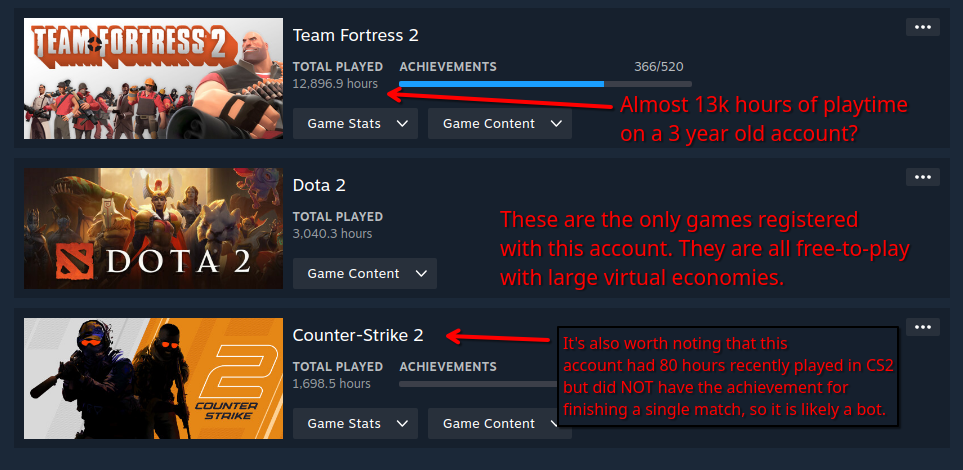
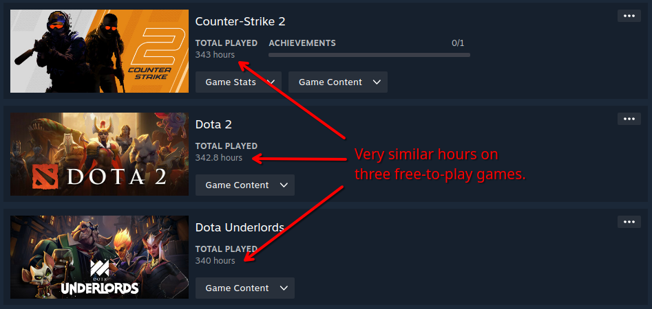
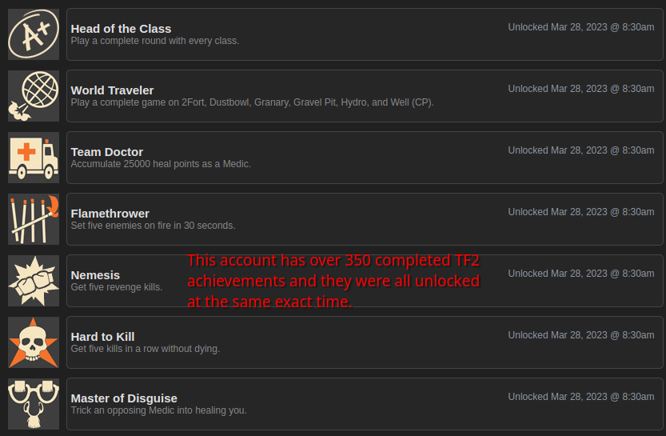

Identifying and Avoiding Steam and Discord Scams
By OPGman
Published on June 24, 2024
Last updated on January 10, 2025
When you hear about data breaches and leaks, you might think that a hacker spent months or years researching exploits in a codebase to abuse. While this is true in some cases, the majority of them happen because someone was tricked into doing something they normally wouldn't do. This is called social engineering, and it's plaguing every corner of the internet, including the gaming community. People are falling victim to scams on Steam and Discord every day. In this guide, I will explain the methods I personally use for identifying and avoiding these scams. Please note that the information provided here is based on my experiences only. Some methods may not apply to you because of how your account is set up or the games you play. Regardless, if you believe a piece of information is factually incorrect or missing, feel free to let me know. All screenshots used are from accounts that I've blocked over the years due to them being suspected scammers.
Identifying Scammers
Profile Clues
Many times you can identify scammers simply by digging through their profile. In some cases you may not even have to dig that deep to find several red flags. Keep in mind that these are clues, though. Finding one or two does not necessarily mean the person is a scammer, it simply means you should be more cautious when interacting with them. This section is only going to cover Steam, since Discord profiles do not have anywhere near as much information.
Little to no paid games in library
There's a decent chance the person is a scammer based on this alone. Not many people exclusively play free-to-play games, but scammers do it to make their profile look legit without having to pay to do it across several different accounts. It's also possible that the person might not be a person at all, but rather a bot that idles in free games to farm items that they can sell or trade.
Similar amount of hours on multiple free-to-play games
Many of the scammers I've come across have very similar hours on free games with extensive marketplaces such as Team Fortress 2, Counter-Strike 2, and Dota 2. Seeing this alone doesn't necessarily mean anything, since there are plenty of people out there who enjoy all of these games, but it's still something to keep an eye out for.
Many games in library with no playtime
This could simply be the result of the person hiding those stats, but it could also mean the person is using a program that scans Steam for paid games that are currently free, and adds them to their library. This is another tactic that scammers might use to make their profile look legit.
Irrelevant or out of place profile picture
Some scammers will choose random names and profile pictures just to make the profile look more natural. Check to see if the name matches up with the contents of the picture at all. I've also seen many scammers use pictures of attractive women, usually with “enlarged” features or wearing something like a gaming headset. This alone is a red flag and likely indicative of a scammer.
Steam level of 10 or less
This isn't necessarily a bad thing, but something to keep in mind. Most scammers won't have a profile level higher than 10 unless they've hijacked an account. Many scammers run multiple accounts and don't want to pay for level-ups for each of them. Several years ago, it was more common for scammers to have a level of 0 or 1, but recently most I've seen have been around 10.
Private profile
Some scammers completely hide their profile so people can't look into it. Again, this is not necessarily a bad thing since there's nothing wrong with wanting that level of privacy, but it's still something to keep in mind when dealing with people you don't know.
Disproportionate amount of completed achievements compared to hours played
Some scammers artificially give themselves achievements to make their profile look more legit. If the person has 300 completed TF2 achievements with only 30 hours on the game, they're probably a cheater or scammer.
Many unrelated achievements were completed at the same time
Expanding on the previous point, most scammers who artificially give themselves achievements can be caught by simply looking at when those achievements were completed. If they were all completed around the same time, the person might be a cheater or scammer.
Most groups the person is part of are for trading or giveaways
A lot of scammers will attempt to steal valuable items from a person's inventory. These types of scammers will usually be part of several groups relating to trading and item giveaways for games like TF2 and CS2.
Unusual profile comments
Some scammers who leave their comments open will have seemingly random people making positive comments without any real context. This may not be anything, but it's still something to keep in mind. Obviously, if there's negative comments accusing them of being a scammer, that would be an instant red flag.
Clues During Interaction
Person says something along the lines of “I accidentally reported your profile”
This is one of the most common scams currently on Steam. It involves a series of messages that make the victim hand over their login information out of fear of getting banned. Someone starting a conversation off like this almost certainly indicates they're a scammer.
Person appears to be an official
This is another common scam that happens on both Steam and Discord, sometimes as extensions to the scam mentioned above. The scammer will contact the victim posting as an official such as a Valve or Discord employee, and will either ask for money or the victim's login information, usually while also threatening to terminate their account or something similar. It's important to note that a common scam tactic is to make the victim think they're running out of time, so they don't have time to actually think about what they're doing. No official from Steam or Discord will ever contact you through normal means. If they do for some reason, it will be through Steam support or email, and they will never ask for your login info or money.v
Existing friend says something unusual
If a friend you know and trust sends you messages saying something unusual or out of place, their account may have been hijacked by a scammer. The best thing to do in this case is verify what they said on a different platform, and ask other friends to see if they received something similar.
Person sends links to a website asking you to do something such as login with your Steam account
Anyone asking you to sign in to an unknown website with any account is an instant red flag. If this happens, do extensive research on the website before entering any information that could compromise an account or your personal identity.
Person you've never interacted with before asks you to trade or play a game
Some people like to message random people who play the same games as them to see if they would like to play. While there isn't anything wrong with this, in my experience it's usually indicative of a scam. The person acts friendly for a while and then attempts to scam them after gaining their trust.
Person wants to trade unusual items
No, not the hats. I'm talking about things that Steam doesn't allow you to trade such as money, CD keys, and physical items. Anyone who wants to give or take things like this is a major red flag and should be assumed to be a scammer, unless you 100% trust them to follow through.
Avoiding Scammers
Blocking
This is obviously the best way of making sure they don't come back. Simply block them if you see too many of the clues listed above. They will more than likely not attempt to contact you on any other platform, though they might have other bot accounts that will still attempt to friend you. Simply block those as well.
Add friending rules to your Steam profile
Have a set of rules that people must follow when friending you, such as requiring a comment explaining why they are adding you. Anyone who doesn't abide by these rules should be ignored or blocked on the spot.
Adjust DM rules on Discord
Discord has options to restrict who can send you DMs and what messages get scanned. I recommend allowing Discord to filter all DMs for spam including friends, in the event that an account is hijacked. I also recommend disallowing people who are in the same server as you to send DMs, unless you have a reason to receive DMs from random people.
Keep in contact with friends on multiple platforms
As discussed in a previous point, being able to chat with friends on multiple platforms can help prevent you from falling for a scam from a friend's hijacked account. It's unlikely that a scammer will gain access to other accounts unless the victim uses the same password. If you see something unusual on one platform, message your friend on another platform to verify that they actually said it.
Keep your own profile clean
Don't join suspicious giveaway or trading groups (or Discord servers) that people or bots might scan to determine who to scam, don't keep scammers on your friends list, and keep at least some parts of your Steam profile private (especially game inventories). Doing these things will lower the chances of scammers making contact with you in the first place.
Enable 2FA
Enabling 2-factor authentication on Steam and Discord can help prevent scammers from accessing your accounts, even if they do manage to get your login info. This goes for every other service that offers this additional level of security as well. I recommend using an authenticator app over SMS or email confirmations, as authenticators are harder for attackers to take control of.
Always remain skeptical
This is pretty much the #1 rule of the internet. Don't take anything at face value and do proper research if you are unsure about something. Simply doing this will pretty much prevent you from ever falling for a scam, and in general it will make your internet experience a lot better.
Additional Resources
- Official Steam Scam FAQ
- SteamRep (For identifying suspicious profiles)